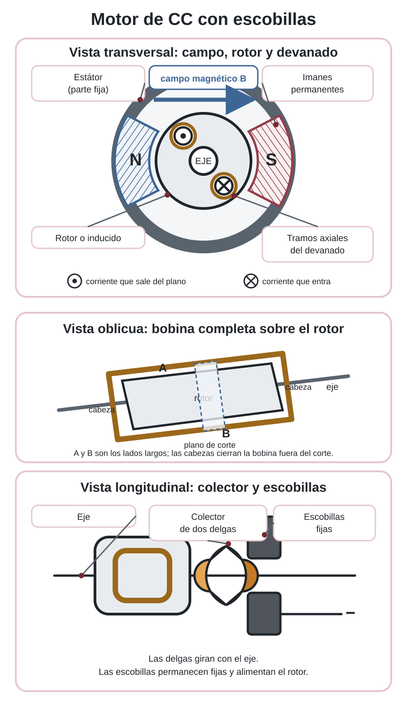
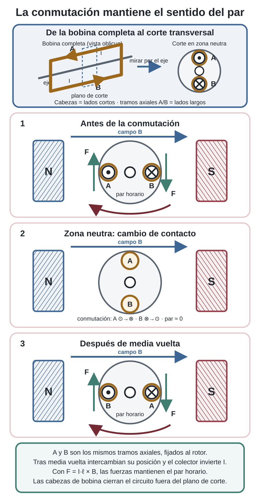
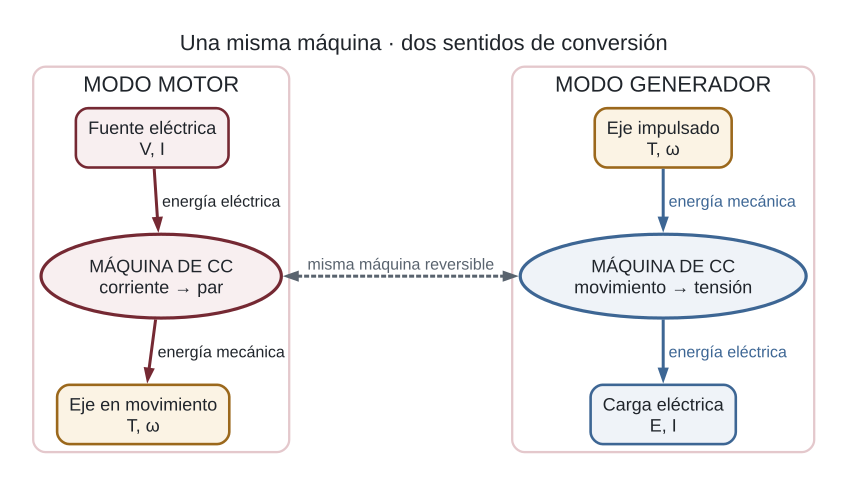

Motor de CC: constitución y funcionamiento
Sesión 9
De la corriente al movimiento
Un motor de corriente continua transforma energía eléctrica en energía mecánica de rotación. Cuando un conductor recorrido por corriente se encuentra dentro de un campo magnético, aparece sobre él una fuerza. En el rotor hay varios conductores y las fuerzas sobre lados opuestos forman un par: una pareja de fuerzas que hace girar el eje.
El dibujo siguiente no pretende copiar todos los detalles constructivos de un motor comercial. Combina un corte transversal, una vista oblicua de la bobina completa sobre el rotor y un detalle longitudinal del colector para relacionar las partes responsables del campo magnético, la corriente, la conmutación y el movimiento.
En la vista transversal se representan solo los cortes de dos tramos del devanado paralelos al eje. Un punto dentro de un círculo (⊙) indica corriente axial que sale del plano del dibujo y una cruz dentro de un círculo (⊗), corriente axial que entra. Las cabezas que unen esos tramos y cierran la bobina están delante y detrás del plano de corte, por lo que no se dibujan en esa vista. El eje se ve de frente como un círculo; en la vista longitudinal se representa como una línea porque se observa de lado.

Qué hace cada parte
- El estátor permanece fijo y crea el campo magnético. En motores pequeños suele emplear imanes permanentes; en otros motores puede utilizar bobinas de excitación.
- El rotor o inducido contiene conductores recorridos por corriente. Las fuerzas magnéticas producen el par que hace girar el conjunto.
- El eje transmite el movimiento a la carga. Los cojinetes lo mantienen alineado y reducen el rozamiento.
- El colector de delgas gira con el rotor y cambia la conexión de sus bobinas cada media vuelta.
- Las escobillas son contactos fijos que llevan la corriente desde la fuente hasta el colector giratorio.
Por qué la bobina no se queda detenida
Si la corriente de la bobina conservara siempre el mismo sentido, el par cambiaría de signo después de media vuelta y el rotor tendería a regresar. El colector evita este problema: invierte la corriente justo cuando la bobina atraviesa la posición adecuada. Así, las fuerzas cambian de lado, pero el sentido del par se mantiene.
Para relacionar la bobina completa con los símbolos del corte, la figura siguiente comienza con una vista oblicua. En ella se distinguen los tramos axiales A y B, las dos cabezas que los unen y el plano perpendicular al eje. El corte asociado corresponde a la zona neutra, con A arriba y B abajo, justo antes de que el colector cambie el contacto.
Cómo leer la animación
La vista oblicua muestra la bobina completa y el corte transversal representa sus dos tramos axiales A y B. Al llegar a una zona neutra quedan alineados verticalmente y el par es aproximadamente cero. El colector invierte entonces ⊙/⊗; con el cambio de corriente se invierten también las fuerzas sobre A y B, pero el par vuelve a ser horario. Puedes animar un solo tramo, saltar entre estados o mover libremente el deslizador.

Motor y generador: la misma máquina en dos sentidos
Cuando la corriente produce el giro, la máquina funciona como motor. Si una acción exterior obliga a girar el eje, los conductores del rotor se mueven dentro del campo magnético y aparece una tensión en los bornes: la máquina funciona como generador. Esta reversibilidad explica por qué un motor que ya gira produce una tensión interna y por qué puede devolver energía durante una frenada regenerativa.

Verdadero o falso
Decide si cada afirmación describe correctamente el motor de imanes permanentes y escobillas. Usa la animación para contrastar conmutación, fuerzas y zonas neutras.
00:00: